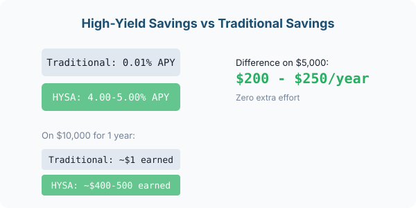

What Is a High-Yield Savings Account?
A high-yield savings account (HYSA) is exactly what it sounds like: a savings account that pays a much higher interest rate than a regular one. While big traditional banks offer around 0.01% APY (that is one dollar of interest per year on every ten thousand dollars), online banks and credit unions offering HYSAs typically pay 4% to 5% APY in 2026.
That difference is not small. On a balance of $5,000, a traditional savings account earns about $0.50 in a year. The same amount in a HYSA earns about $200 to $250. For doing absolutely nothing different, that is a significant upgrade.
HYSAs are typically offered by online banks (Ally, Marcus by Goldman Sachs, SoFi, and others). These banks have lower overhead costs because they do not operate physical branches, and they pass those savings on to you in the form of higher interest.
How Does a HYSA Work?
A HYSA works almost exactly like a regular savings account. You deposit money, it earns interest over time, and you can withdraw it when you need it. The main difference is that the interest rate (APY) is much higher.
The interest is compounded — usually daily or monthly — meaning you earn interest on your interest. That compounding effect grows your money faster than simple interest would, even if the rate is the same.
Most HYSAs come with these features:
- FDIC insurance up to $250,000 (your money is protected)
- No monthly fees (most online HYSAs have zero fees)
- No minimum balance requirements (many accounts open with $0)
- Easy transfers between your checking account and HYSA
- Lower withdrawal limits (federal rules limit six withdrawals per month, though some banks have dropped this restriction)
Why Traditional Banks Pay So Little
Big traditional banks like Chase, Bank of America, and Wells Fargo pay near-zero interest on savings because they can. They have millions of loyal customers who never check their interest rate, so there is no competitive pressure to raise it.
These banks spend heavily on physical branches, ATMs, advertising, and legacy technology. All of those costs eat into the money they could otherwise share with depositors. Online-only banks have almost none of those expenses, which is how they can pay you 4%+.
The math is simple: if a bank pays you 0.01% and charges borrowers 7% on a mortgage, the spread is generous. Online banks compete harder for your deposits because deposits are how they lend and make money.
| Bank Type | Typical APY (2026) | Interest on $10,000 for 1 Year | Monthly Fee |
|---|---|---|---|
| Big traditional bank | 0.01% | $1 | Often $5-$12 |
| Online HYSA | 4.00% - 5.00% | $400 - $500 | $0 |
| Credit union savings | 0.50% - 2.00% | $50 - $200 | Often $0 |
How To Open a HYSA in 10 Minutes
Opening a high-yield savings account is fast and requires no credit check. You can do it entirely online:
- Pick an online bank. Popular options in 2026 include Ally Bank, Marcus by Goldman Sachs, SoFi, and Discover Bank. All offer FDIC insurance and competitive rates.
- Click open an account. You will need your Social Security number, a government ID, and your contact information.
- Link your existing checking account. The bank will ask for your current bank's routing and account numbers so you can transfer money between accounts.
- Make your first deposit. Start with whatever you can, even $10. Most HYSAs have no minimum.
- Set up automatic transfers. Schedule a small recurring transfer on each payday so saving becomes automatic.
The whole process typically takes under 10 minutes. Your money will start earning the advertised APY from the day it lands in the account.
One action for today: check what your current savings account is paying. If it is under 1%, open a HYSA and move your emergency fund or short-term savings there within the week.
Common Questions About HYSAs
Is my money safe in a HYSA?
Yes. High-yield savings accounts at FDIC-insured banks are protected up to $250,000 per depositor, per bank. This is the same protection regular bank accounts have.
Can I lose money in a HYSA?
Unlike investing, HYSAs do not go down in value. The interest rate can change — rates can drop if the Federal Reserve cuts rates — but your balance will never go below what you deposited (unless you are charged fees, which most online HYSAs do not have).
Do I need a separate bank for checking and savings?
Not necessarily, but many people keep their checking at one bank and their HYSA at an online bank. Transfers between the two usually take 1-3 business days, so it helps to keep a buffer in your checking account for immediate expenses.
Will a HYSA affect my credit score?
No. Opening a savings account does not involve a credit check, and savings accounts are not reported to credit bureaus.